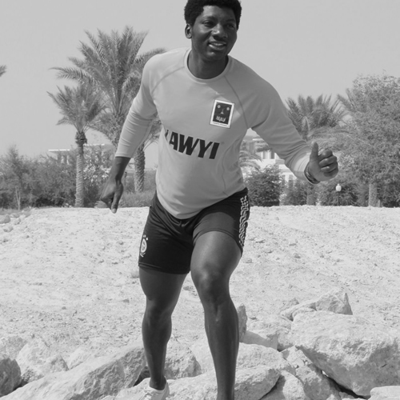

|  | Nationality : British My goals are always to improve my
physical health and fitness. I've always excelled in
physical activities and I consider myself one of the
best personal trainers around “Personal Trainer
Extraordinar”. We are hunter gathers, we must
never forget this, our bodies are made for hunting
prey and gathering materials, it is with these tools
that we conquer all we survey. We must always
strive to improve them to be at our best both
physically and mentally. Contact details: flave@yawyi.com 0555 694015 |